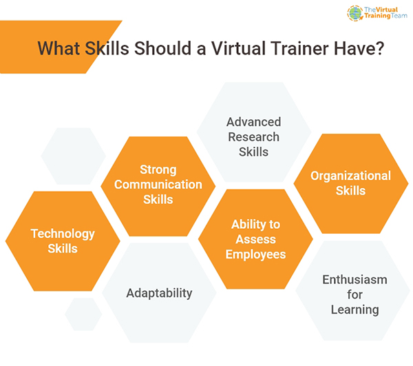
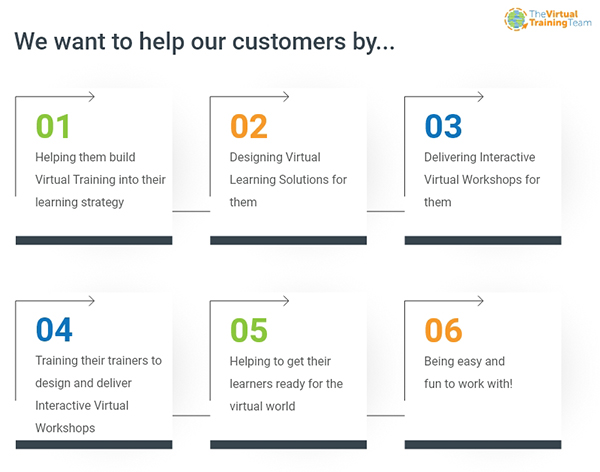

Train the Trainer Programmes
Train the Trainer Programmes are learning courses that provide new trainers with methods and techniques in order to provide training for others. Virtual Train the Trainer Programmes are the same, but take place via a virtual platform; such as Zoom or Microsoft Teams.
In this page, you will find everything that constitutes a Train the Trainer Programme, why it is beneficial and how to build your own Train the Trainer Programme, along with a range of helpful tips and insights from the Virtual Training Team about our own Programme.
What is a Train the Trainer Programme?
A Train the Trainer Programme is a learning & development framework run for facilitators or subject matter experts to enable them to go on to train other employees within their organisations and beyond.
Typically, groups of 8-12 attend a series of Masterclasses in order to learn the necessary skills and techniques to make them capable trainers / instructors in their field. It provides coaching, practice and feedback which are invaluable in setting up new trainers for success.
Train the Trainer Programmes were more recently adopted in the virtual workspace; facilitating a broader reach to remote working colleagues by providing online Train the Trainer Courses and allowing the training of trainers to take place on a much wider and more consistent scale.
Why do we need Train the Trainer Courses
Train the Trainer Courses can provide individuals with not only platform techniques, the confidence they need to deliver and the design know-how, but also helps to reinforce the other critical skills they require in order to facilitate successful workshops and ensure learning transfer and employee knowledge retention.
To stay competitive in today’s modern world, organisations need to implement continuous, results-driven business training to maintain productivity and profitability. This means ensuring corporate trainers are equipped with practical skills and up-to-date training strategies in order to achieve this.
Why should you get upskilled with Virtual Train the Trainer?
What skills should a Virtual Trainer have?
Having a strong facilitator can be the difference between achieving learning transfer and not. Here are seven skills that we feel are required to be a truly effective trainer in the modern workplace.- Technology skills
- Strong communication skills
- Advanced research skills
- Organizational skills
- Ability to assess employees
- Adaptability
- Enthusiasm for learning
Having facilitators that are skilled across these key areas will be hugely beneficial in providing impactful, engaging and successful training sessions for all employees.
20 Tips To Facilitate A Virtual Workshop – The Rookie’s Handbook
What is a Train the Trainer model?
Simply, a group of trainers attend a concise Training Programme that focuses on both specific training content and how to deliver this training content successfully to others. The expected outcome is for these trainers to learn new knowledge and skills and from there they can go on to successfully coach more people within the organisation including new employees.
What are the benefits of the Train the Trainer model?
The main advantage of the Train the Trainer model is its effectiveness to impart new skills and learnings onto a range of people within an organisation, with the additional benefit of offering fantastic professional development for the employees involved.
It is also cost-effective; allows for a greater consistency in the delivery of training including tailored learning to suit learners and facilitates more effective follow up training for all employees.
It is important to get Virtual Training right the first time. Changing opinions after a negative experience can be difficult.
This client had worked internally to move their training to a virtual approach and struggled. The programme had been halted and the client needed assistance to re-engage their trainers to successfully make the move to virtual training. Read more here to find out how we changed their negative Virtual Training experience to a positive one .
For more insights, please visit our Train the Trainer Programme
How do I build a Train the Trainer Programme?
If you decide that a Train the Trainer Programme is the right way forward in your organisation, there are a few things that need to be taken into consideration in order to build an effective approach.
- Be clear on the purpose of the programme What are the main goals you want to achieve? Do you want to build up a roster of trainers who can be called upon to deliver a wide range of development training? The answers you decide on here will inform which areas you need to focus on when deciding the training curriculum.
- Establish progress measurement You need to set up measurable objectives for your programme. Tracking the progress of your new virtual trainers competency will help you to judge the effectiveness of your programme. This is essential to being able to evaluate and improve your Train the Trainer Programme over time.
- Decide on your training curriculum Now that you have decided on the objective, your Train the Trainer model will be based on encouraging your trainee virtual trainers to improve their subject matter knowledge and delivery skills. The curriculum needs to reflect this. It can be helpful to define the course by session; decide what the focus will be and what content you want the trainers to deliver to the participants.
- Create your training materials In order to achieve consistently high results through the delivery of your training, you should design and provide all the materials that your new virtual trainers will need when they come to deliver the training to their colleagues. This can be anything from slide decks to participant handouts.
What makes an effective training session?
Once all the planning has been done, the preparation taken care of and the objectives are set then the training space is ready. But how do you ensure it is an effective experience?
Here are 10 techniques to help you deliver an effective Virtual Train the Trainer Workshop.
- Let your participants know what you are going to cover; include in the introduction a brief overview of the training session’s main points
- Provide plenty of information; explain key points, demonstrate procedures and share all the information the participants need to know
- Conclude with a summary of the initial overview highlighting key points enabling participants to retain information
- Use interactive training approaches as much as possible; get participants to practice processes and techniques during the session
- Involve the participants; ask them to share their experiences on the training topic. Hearing different voices keeps the training varied and engaging
- Tee questions up before asking participants to answer them; this ensures all participants know what question is being asked of them
- Start and finish on time; don’t hold up the session waiting for late arrivals and don’t run over trying to cram everything in. You can always run another session for further discussions
- Allow time for breaks - especially in longer sessions
- Encourage feedback in the training session; participant input is invaluable for improvement
- Analyze the session as you go; always be on the lookout for techniques or methods that work well, so you can incorporate them into future sessions
What about Train the Trainer Programme certification?
Being able to display visual representations of your credentials after your name online is a great way to strengthen credibility and professional standing within the Learning & Development sector. Attending a Virtual Train the Trainer Certification Programme can achieve this.
An accredited Train the Trainer Certification Programme allows you to visually communicate to potential clients that you have successfully completed the required workshops to obtain the certification.
Currently, when trainers attend VTT’s Virtual Train the Trainer Programme, once all the sessions are completed, they receive a certificate and badge to display on LinkedIn to showcase their achievement.
Train the Trainer Course
A Train the Trainer Course is specially designed to help trainers and coaches improve their skills for training others and can be undertaken for a variety of reasons.
Case study: Developing a Train the Trainer for a Public Body
This client contacted us when they had recognised that their training needed to adapt and evolve with their modern workplace. The primary challenges for the client were reduced physical working space; less room availability and a more geographically spread workforce.
Types of Train the Trainer Courses
There are three categorisations of traditional in-person Train the Trainer Courses. While there are a myriad of options on how to structure a Train the Trainer Course, it heavily depends on specific needs and timeframe. Here are the three most common Train the Trainer Course formats.
Short intense session
Long, scattered sessions
Long, intense sessions
Usually scheduled over 2-3 days, spanning roughly 20 learning hours. It covers the essentials and typically is used to provide subject matter experts with facilitation and even some training design skills. The overall goal is to empower attendees to go on to deliver their own effective training sessions in their fields of expertise.
Usually one day per week over 10-20 days, roughly 80-120 learning hours. If there is no availability for short intense sessions, then choosing a format of recurring weekly training can be a good second option.
Usually a full 1-2 week event, roughly 40-80 learning hours. This is the next step up from the basic essentials. It allows for more complex interactions between participants and coaches, and more opportunity to explore complex interpersonal topics that facilitators need to master. This can be a great option if you have a team that needs to work together later on and the necessary time available in which to accomplish it.
Complex Global Train the Trainer in Sales
The client wanted to take their training existing programme globally and virtually for their inside sales teams. This required training their trainers to deliver virtually whilst converting the existing programme into a virtual, interactive one.
Topics to include in Virtual Train the Trainer Courses
- Team building techniques - show facilitators some effective interactive exercises and icebreakers to help learners become familiar with each other
- Presentation skills - how to boost your presenting abilities
- Facilitation skills - allow trainers to practice facilitation skills needed to get group conversations flowing effectively
- Virtual Design - share how to set up slide decks to work most efficiently in the virtual environment, fostering engagement and interaction
- Visualisation - explore ways to use visuals in a virtual training session
- Participant management - share ways to keep learners focused and effectively manage their energy levels, while being able to deal with challenging situations
- Group facilitation - learn facilitation techniques to have a balanced mix of interaction
- Experiential learning - use real case studies to investigate and debrief in order to enhance learning transfer
- Group dynamics - demonstrate how to adjust to the dynamics of different groups
Train the Trainer Course for new Virtual Trainers
Training, as we all know, is a critical piece to driving success in any organisation. Enhanced skills and knowledge across all levels of a business invariably improve competency and productivity.
Benefits for new Virtual Trainers currently include :-- They can instantly get back to work, by delivering the backlog of training from recent months and help with virtual onboarding
- They can also assist colleagues in the journey of getting back to work and helping them to adapt to new circumstances and ways of working remotely or in offices
- Improving your virtual delivery skills also helps to further other key virtual areas such as providing webinars or creating vlogs and podcasts
- The training budget can reach further as costs per head are reduced thanks to no travel, no hotels and no meeting venues required
- Trainers can manage their work-life balance better as delivering training virtually allows for less disruption to a working day
- Learn skills that they can carry proudly into the future and add to their CV
Find out why getting upskilled for the future is a great idea!.
Our Train the Virtual Trainer Programme
The modules below make up the Virtual Training Team’s complete Virtual Train the Trainer Programme. Whatever your starting point, we will give you the tools to design and deliver brilliant Virtual Training. We can flex and tailor the process to best meet your needs.
Virtual Delivery Masterclass
Virtual Design Masterclass
Interaction Masterclass
Practical Masterclass
In the first Masterclass of the Train the Trainer Programme, we cover how to set up and begin a Virtual Workshop that creates learner engagement and involvement right from the outset. We share over 100 tips, techniques and processes that boost interactivity and learning transfer.
In this Train the Trainer Masterclass, we share our unique 8-step Building Block Design approach to structuring content and process. We use the science of learning and our sequencing template to focus on how to design Virtual Training that delivers results.
This Train the Trainer Masterclass focuses on how to develop conversations and interaction in the virtual environment. We explore how the language we use and the way we ask questions can help or hinder interaction. We also share our structure for initiating group conversations using failsafe methodology.
In the final steps of the Train the Trainer Masterclasses, participants prepare and deliver a section of a Virtual Workshop in order to put into practice all they have learned. The group shares feedback along with a VTT master coach who will give guidance and share best practice. Our clients agree this Masterclass is a must have!
Why The Virtual Training Team
We know that more organisations are making the move to embrace Virtual Training. As a Virtual Training Company, we just want to help make it a success for your learners, your L&D team and ultimately your business.
We do this by using our 10+ years of expertise in the world of Virtual Training to:
- Build Virtual Training into your learning strategy
- Design virtual learning solutions for you
- Deliver interactive Virtual Workshops for you
- Train your trainers to design and deliver interactive Virtual Workshops
- Ready your learners for the virtual world
- Be easy and fun to work with!
Make your move to virtual and get upskilled now.
Featured Resources
-

Virtual Instructor-Led Training (VILT) - Unraveling the Mysteries
Virtual Instructor-Led Training, a complete guide. Learn how VILT is a future of classroom training, benefits, advantages, top tips, and best platform.
Read more... -

Virtual Training - A Complete Guide to Everything You Need to Know
Virtual Training is a method in which a virtual environment is used by a trainer/coach to show, explain and teach certain skills in order to help others learn.
Read more... -

The Secrets To Conducting Great Virtual Meetings
Virtual Meeting: Learn what is virtual meeting, why all business is using this, what are the best platforms to run it successfully and complete benefits.
Read more...